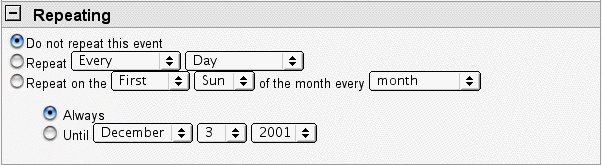
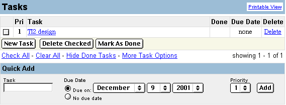

Description from Prometheus:
Calendar. The portal calendar is a central place for users
to view all events relating to their courses and affinity groups as well as
personal events. Calendar features include:
* User-defined events
* Multi-day events
* Timed events
* Choice of daily, weekly, monthly, or yearly view
The calendar integrates with session dates from all classes in which a student
is enrolled, affinity groups and events, and institutional events. (Is this
a choice or by default? I’d like it to be a choice.)
The Prometheus calendar experience
It appears very small when you first view it. When an event is added, it just makes a link on the date (e.g., if you added an event on the 3rd the 3 would now be a hot link). It would be nice to offer members a choice of viewing their calendar weekly, monthly, daily on the first click of their calendar (this is an option at a second click of the calendar currently in Prometheus). The current Prometheus calendar has no options for emailing users reminders, or adding one event from another calendar to a personal calendar.
I’m not sure how to get course listings off my calendar. I thought there was an option that you could turn on/off to indicate what events showed up on your calendar but apparently not. Apparently it’s that any course event for a course you are enrolled in automatically shows up on your calendar (probably the same if you are in a group with a calendar). We want it to be an option for users to determine which events from groups/courses show up on their personal calendar.
I really like the functionality in Yahoo Calendar. There is also a task list function in Yahoo Calendar that I really like! This may or may not be appropriate/feasible for TI v2. I will discuss it at the end.
Notes for Groups and courses
We’ll need to make sure there is a permission setting for groups and courses so that the instructor or owner can give others permission to post and edit the calendar.
Calendar Goals
- To be a personal calendar and an organizational tool for the community (ASO), groups, and courses.
- The calendar communicates with members via reminders and with other features in the system (e.g., transcript generator).
Organizational Calendar for the Community
Each month, TAPPED IN staff recruit and organize volunteer speakers from the community to lead sessions in the TAPPED IN community as ASO sessions. In the current version of TAPPED IN (MOO) there is a form that potential speakers can fill out under the "community area" on our web site. In TI2 there will be an option for submitting/suggesting events to the ASO & group calendars in the ASO and group calendar areas. (Responsibilities for the speaker include prepping for the content of the session, finding / having resources to share, and leading the session during the allotted time. The leader of the session writes a short description of his/her session and that is stored on the calendar.)
In the new calendar form for TI2 entries should require:
- a start time and approximate end time (the calendar converts times to the person’s timezone for them–this information is stored in the profile) (if course or group event or it’s an event that the user wants to be transcribed) ASO sessions are always transcribed. More on this later.
- a room where the event will take place this is important for 3 reasons. 1. To get the participants to the right place (rooms should be hot linked on the calendar and people should be able to click on them to get to the session), 2. To turn on the transcript generator, 3. To do searches and counts for our research later. (The user will be able to select from a list of rooms on the form…the rooms that pop up on the list are rooms that the user has some affiliation with… e.g., belongs to the group or has it on his/her favorites?) (Can users schedule rooms like ASO for their own events?)
- Session name
- Description
- Leader name (can pull Session name for person’s profile–potentially something the mentor application or reputation manager might want. Should we assume person entering the info is the leader of the session? –Maybe on the private entry form, but not on the ASO/Group form.)
- keyword categorization (so people can search and we can sort by keyword)
- A way to submit an idea/event to the ASO calendar. (In the current system people are confused about how things get on the ASO calendar. I want to make this more obvious for members in the new system in an attempt to grow the offerings that the community members make for ASO sessions.)
- Group affiliation (if an event is submitted to a group calendar then that group is automatically filled in from a hidden field and is the group affiliation. If a group event also appears on the ASO calendar, this is the group affiliation if it doesn’t also appear on a group calendar…. If it appears on both a group calendar (e.g., Social Studies Forum and ASO calendar, then there are two group affiliations–is this hard for the database? I don’t know if there would ever be more than 2 groups…)
Group events are input to a group calendar by an administrator of a group (for
group events) or input or approved by an administrator of TAPPED IN for the
ASO calendar. Members without permission to post to a group calendar can submit
from an area on their own personal calendar posting area to group calendars
(of groups they belong to) and/or the ASO calendar (see proposeevent.html).
This is now a link on the main calendar view for each user now next to the Add
personal event link.) I spent some time thinking about this…. I think it
makes the most sense in that it’s a different form than the one you use
for a personal event that gets added on to your own calendar, it thus shortens
both the "add a personal event" input screen and the "propose
an event" input screen. It also makes apparent to the members how they
can submit ideas/ propose events for the community or a group–hopefully
inspiring more people to submit. The moderator of the group or TAPPED IN admin
for ASO will approve or not approve the posting. (See approveevent.html).
Transcript Generator
If the Group owner chooses to archive an event to the Group room files, 10
minutes before the event is to start, automatic transcript capture feature is
turned on by the calendar. 15 minutes after the event is scheduled to end, the
transcript capture feature is turned off, the transcript is filed. (Will there
be a way for the group owner or someone in the room to prevent the automatic
turning off of the transcript capture feature in case the session is being much
longer than planned and very interesting thing they want archived are being
said?)
Each group room will have a designated place for filing transcripts and the
ASO room will have transcript library. If a group wants to archive one of their
events and it’s also an ASO session, the main copy will be stored in the
ASO room and a link will be made to their group transcript library. This is
because there will be an expiration date on Group Event transcripts (1 month?
3 months?) and no expiration date on ASO sessions. Group Leaders can extend
the expiration date, but they still do have a limited quota and the transcripts
will use up that quota. Paid tenants can make their expiration date whenever
they want by default as long as they don’t exceed their quota. (I’m
assuming that paid tenants will have different amounts of quota given what they
pay? Something to figure out in the pricing scheme.) Members can go read the
event in the transcript library where it is stored or have it emailed to them
for reading offline (once emailed, they can keep a copy forever if they like).
We decided that Calendar Settings make the most sense to be linked to from the member’s calendar view rather than off of "Me" settings or "room" settings.
Personal Settings
(Linked off of My Calendar View settings.html)
- Hours you typically like to see on your daily calendar view
- Default view you prefer (week, day, month)
- TimeZone (should be set based on state and double checked by person)
- Which events you want to be emailed reminders of (choices for default setting are: All events on my calendar, Only events I select and check email me, All personal events, All ASO events on my calendar, All Course events on my calendar, All Group events on my calendar)
Incorporate Events Settings
(Linked off of My Calendar View incorporateevents.html)
- Choose which events for groups / ASO chat types / courses / or even down to the level of assignments or lecture topics are integrated into your calendar
- In addition, a member can link to one event at a time when he/she is viewing the detailed information about it on a calendar. This information is explained on the Incorporate Events Settings Web Page.
View of the calendar
- Members can see any public group calendar when they enter the group room,
any course calendar when they are part of a course, the ASO calendar, their
own calendar and an private group calendar when they are part of the group
(they have to be part of the private group to enter the private group room).
Members can not view other member’s calendars.
- Members see a personalized view of the calendar based on their specifications.
The user creates a profile based on subject, grade taught, and interests (a
survey that they fill out when they get membership or first log in). There
is a button to view all events on the calendar, but for a member who has filled
out the profile, the calendar will, by default, show the sessions that match
the users preferences and for calendar settings these settings will be pre-configured.
For members who have not configured interest settings (can a member join without
selecting some interests?) (and for guests) they will just see all events
on the calendar they are viewing (See Guestnoprefcalendar.html
for the guest view and calendarview.html
for the member view).
- When a user has created an event for his/her calendar it shows up as a hot
link on the date of the event. When the event hot link is clicked, the user
gets taken to the form for editing/inputting a new event (See popupcalendardetailprivate.html).
The user thus has access to all the relevant information and can also change
it. For events that are incorporated to the users calendar from other calendars
when the user clicks on those events he or she is taken to a read only form
with more information about the event. (See popupcalendardetailASO.html).
(I envision viewing both the personally created events and the incorporated
events in a pop-up window.)
- When looking at any calendar the user can add any individual event to his
or her calendar even if he or she does not link to the calendar or normally
incorporate events from that calendar. There will need to be an add event
to my calendar button associated with every event. (Not sure whether this
should go on the overall view of the calendar or the description of the event
that the user would get if he or she clicked to read more about the event.
I think the latter.) The user can also choose if he/she wants a reminder for
the event. (See /SSFcalendar.html
and click on event to see what the details look like.)
- Members can choose to have the calendar email them a reminder for sessions
that they selected in the calendar. By default the calendar does not email
any reminders with the exception of an event that the member is a leader of.
See above under Personal settings or settings.html
for details about the email settings. Email reminders can be set for any event
on the calendar–including an event input by a member (see next bullet).
Email reminders can be set to be sent 5 minutes prior to the event to 1 week
prior to the event based on users’ preference. Members can also choose
to have the calendar PM them.
- Members can input personal events into their own view of the calendar and
invite other TAPPED IN members / groups to attend their event through when
they create or edit an event on their calendar. Events that are input by members
on their personal calendar only show up on that personal calendar unless others
who were invited choose to add the event to their calendar too. A member who
was invited to an event that was only on another member’s calendar (not
a group / course or other public calendar) would get an "approve event
form" much like the one the Group or ASO calendar owner would receive.
The member would be notified of the invitation in a Private Message and could
click on a link in the private message to get to the "approve event"
form (see inviteapprove.html).
(See inputnewevent.html
for a mockup of the input screen that creates the invite.)
- Members who have permission to post to group calendars can input directly
to the calendar and also submit the event to other Group calendars (of groups
they belong to) for consideration of posting to the other owners. When the
event is submitted the owner/moderators will get a PM and be notified and
can then communicate with the submitter of the event see
approveevent.html. I’m not sure if there will be more forms
to support the communication or if the moderator of the calendar will need
to email the submitter… I need some help in thinking through this.)
- When a member joins a group he or she has the option of having all of the group’s events show up on his or her calendar or configuring accordingly. Would this be something that appears on a "joining a group screen" Melissa? (Could this be overridden by a tenant organization e.g., NCREL wants to have all their calendar events show up on their user’s calendars?).
- Members can turn on/off the ability to view events at any time through Incorporate Events settings. (How does this relate to the bullet above? Maybe the Tenant group could turn it on by default but the member can still turn it off.)
- There will be a "filter view" on the calendar so that members
can view just ASO events on their calendar, or just personal events, or just
course events… See calendarview.html.
- Members who are enrolled in classes have the option of having class events
show up on their calendar. Members can also choose which type of class events
are shown on their calendar, e.g., assignment due dates, class meetings, etc.
(These options are shown on the settings page incoporateevents.html)
- Day, week, Year, and List View as indicated on calendarview.html
still need to be worked out. I’m envisioning a very standard day, and
week view of the calendar (see Yahoo Calendar for what those look like). I’m
not sure if a Year view makes sense. The "list view" is a new view
that I envision that just lists each session and it’s description NOT
in a calendar format. The list view will look more like http://www.tappedin.org/info/calendar/jan02.html
and is a low priority!
Calendar tool related to the database/Admin Researcher Tools.
Something to keep in mind…The data base should be structured so that queries
can be made so that it is easy to determine WHO attended WHAT calendered events.
(What are the criteria to consider someone attended a given event? The person
added the event to her calendar? She entered the event room during the scheduled
event time? What is she entered the room only 1 second? Maybe she was 'on her
way' to another room? or joined by mistake? Events as perceived by the program
have little or no context unlike events as perceived by a human being.)
This should be done for all calendars. It’s important to know what events
took place, but also who attended. Queries on Leader of the event are important
as well (but Leader is a field associated with the calendar). One of the most
tedious things we do in the current version of TAPPED IN is try and determine
who attended what event. Since the TAPPED IN system database will have the concept
of "event" (or time during which an event is occurring, it should
be much easier to do queries to find out who was in the room during that event.
Of course, queries should be able to be done on Calendar related fields.
Things to think about for the calendar
Do we want to incorporate a "repeating event" feature into the calendar?
Many calendars have this… Yahoo does… Palm calendar does…This
might be a V3 feature although it could be very useful for TI staff b/c we have
quite a few repeating events on the ASO calendar (e.g., Tips and Tours of TAPPED
IN). This is a priority 2 feature and would be great if we can have it!
From Yahoo Calendar:

Do we create email versions of the calendar for ASO calendars anymore or do
we just email a general announcement saying that a new ASO calendar is up? Or
do we email a person about the sessions that are occurring that are in the area
that the person has specified a preference in? (Judi would like to do the latter
option. Janus and Patti vote for just emailing a URL; the ASO calendars are
already really long and will likely get longer; let the user click to a URL
if they're interested instead of a long spammy message)
Task List Feature:
Like the to-do list feature in the Palm. Below is Yahoo’s interface for
editing tasks. The task list just shows up to the left of the calendar in their
interface… and I was surprised that when I added a due date on my task,
it didn’t also put it on my calendar. It just now listed the due date on
my task list. I thought that the calendar and task list would be more integrated
and show me when things from my task list were due.
Janus notes that if there are group tasks lists it would be good to have an
interface to assign tasks to people, and maybe the people who have been assigned
a task to could add updates / status reports on the task (and this could be
reflected in the task list, like: 50% in the done column.

Extra stuff for me.
Check to see if Prometheus does have a way for exporting Calendar to Palm…
I did this, and didn’t see anything about this in the current version of
Prometheus. I don’t think this is a high priority feature… If it’s
one that they create great, but if not, then we can live without it!